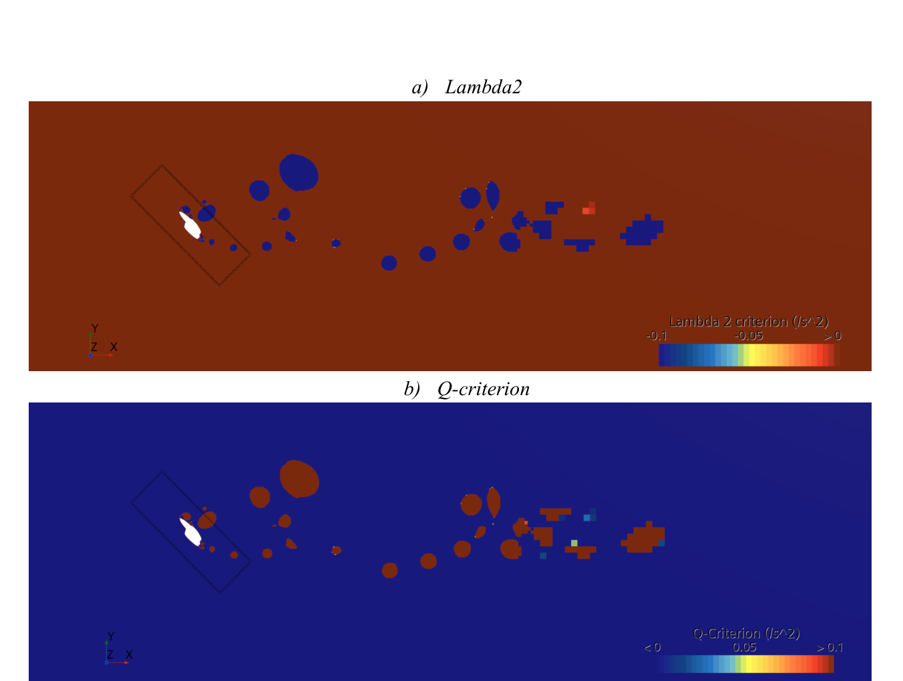
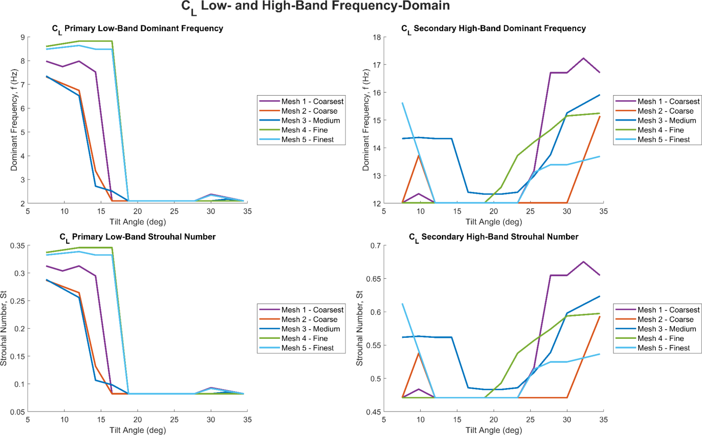

Wake & Vortex Behaviour
Vortex identification, how the wake develops through the sweep, and what the frequency domain looks like.
Vortex Identification
Vorticity contours alone are not enough to interpret a separated wake, because shear layers and coherent vortex cores overlap visually. I used two further criteria alongside vorticity magnitude, both derived from decomposing the velocity gradient into its strain and rotation parts: the Q-criterion, where Q > 0 marks regions in which rotation dominates strain, and λ2, where λ2 < 0 indicates a vortex core.
Fixed thresholds of Q = 0.1 and λ2 = −0.1 worked on the three coarser meshes but produced nothing legible on the two finest, which needed thresholds five orders of magnitude larger. The cause is physical as well as visual. Both scalars are built from the velocity gradient tensor, so finer cells resolve sharper local gradients and reduce numerical diffusion, and the magnitude distribution shifts with mesh density. The criteria are mesh-sensitive, so I analysed them qualitatively.

The Developing Wake
- Early in the motion the wake is relatively compact and the strongest disturbances sit close to the nacelle.
- As tilt increases, the low-momentum region downstream widens and extends, becoming most evident around 30°. This matches the strong rise in CD and the point at which the meshes begin to diverge.
- The widened wake is not uniform. It contains concentrated vortex structures embedded in the larger disturbed region.
- The wake stays visible downstream, but the highest-intensity cores decay quickly once shed from the near-body region.
The overall picture is a wider separated wake with a more nacelle-concentrated vortex field as tilt increases, rather than one steady shedding mode growing in amplitude.

Frequency-Domain Analysis
I transformed the force-coefficient reports with an FFT over two separate frequency bands, using a 0.5 s moving window. The overlap improves the continuity of the extracted signal but not its resolution, so these are not settled modal values. The flow is transient throughout and there is no stationary shedding mode.
- The low-band CL response is the most physically robust, at St = 0.129–0.183. That range sits inside or close to values reported for sharp-edged bluff bodies (rectangles, squares and inclined flat plates) when an appropriate characteristic length is used.
- The low-band CD response is narrower and lower, at St = 0.103–0.114.
- The higher-frequency bands (St = 0.490–0.544 for CL) are too broad to be the primary bluff-body shedding mode, and I treat them as secondary wake features.
This matches the bluff-body literature. Rectangular-cylinder wakes are known to switch between narrower and wider states, with the wider state reducing Strouhal number and producing multi-peak spectra during transition. I read the spectra as evidence of wake-structure reorganisation during tilting, and not as a single mesh-independent Strouhal number for the nacelle.

Implications for the Conversion
The tilting nacelle cannot be treated as a quasi-static loading case. It is an evolving unsteady response made up of low-frequency shedding and secondary spectral content. The wake broadens and becomes less settled as tilting continues. For the aircraft, that makes the later stage of conversion the relevant regime for oscillatory loading and for wake impingement on downstream surfaces, specifically the empennage.